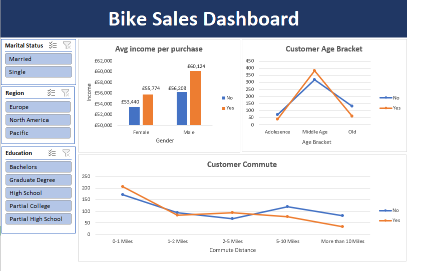

Cleaning and analyzing a bike sales dataset to understand what separates customers who purchased a bike from those who didn't — looking at income, age, and commute patterns.
This project cleans and analyzes a customer dataset to explore the relationship between bike purchases and customer demographics — specifically income, age bracket, and commute distance. The finished dashboard includes interactive filters for marital status, region, and education level, allowing the data to be sliced by customer segment.

Reviewed the raw customer data for inconsistencies, duplicates, and formatting issues before analysis.
Built PivotTables to compare income, age bracket, and commute distance between customers who purchased a bike and those who didn't.
Designed an interactive dashboard with slicers for marital status, region, and education, so the underlying patterns can be explored by segment.
This held true across both genders — and was most pronounced among male customers.
| Gender | No (Didn't Purchase) | Yes (Purchased) |
|---|---|---|
| Female | £53,440 | £55,774 |
| Male | £56,208 | £60,124 |
That concentration held for both purchasers and non-purchasers — far fewer customers fell into the Adolescence or Old categories by comparison.
Customers with very short commutes (0–1 miles) made up the largest segment overall. As commute distance increased, non-purchasers became relatively more common at the longer distances, while purchasers declined more steadily — suggesting commute length may have some relationship to purchase likelihood, though income appears to be the stronger signal of the two.
MOCKUP — fill in bracketed placeholder before publishing